Stories, milestones and moments from life at Wings Melaka.
December 2024
Graduation & Christmas Party
We held our annual Graduation & Christmas Party, attended by our students and their families, as well as donors and individuals who have supported us over the years. The event was sponsored by Hatten Hotel, Melaka, and we celebrated 8 students who graduated from our programmes this year.
We were graced by special dance performances from our EIP & SAP students and a sketch presentation by SAP titled "The Great Big Turnip". All of our students and their siblings exchanged Christmas gifts, and families had the opportunity to bond and get to know one another over high-tea.
Hatten — thank you!Student graduationStudent graduationStory tellingEIP danceSAP sketchAll staff and personnel
July – September 2021
Persevering Through the Pandemic
We are encouraged by what we have overcome — the scepticism around online and virtual lessons during the prolonged lockdown caused by the COVID-19 pandemic. While the effectiveness of physical lessons still prevailed, virtual learning kept the routine going and dynamic, thanks to the joint efforts of Wings teachers and the parents who never gave up on their child’s learning journey.
Throughout the months of online lessons, we reduced student contributions by 50% across the board. Some parents continued paying in full, while those most affected financially during this crisis received a 100% waiver from the Board.
As the Malaysian Government began reopening, we prepared the centre to meet the stringent SOP requirements. With the last quarter of our learning calendar underway and the risk of a rebound in cases, almost 50% of parents preferred to remain on online lessons until January 2022, so the Board decided to continue virtual lessons until further notice.
EIP virtual lessonSAP virtual lessonGround maintenance to prepare for centre reopeningGround maintenance to prepare for centre reopening
March – June 2021
Adapting to the New Norm
It has been a challenging season for all parents, students and service providers since the outbreak of the COVID-19 pandemic. Routines were disrupted and activities suspended due to the Movement Control Orders, yet everyone strove to adapt to the new norm in line with the real learning and growth needs of the special children we serve.
Based on the MCO schedules — MCO 2.0 (12 Jan – 28 Feb 2021, online), physical lessons in March–April 2021, and MCO 3.0 from 17 May — we could only run physical lessons for less than two months over the period. Nevertheless, virtual lessons remained the constant avenue of support for parents and students.
Many families were affected emotionally and financially, but we continued to encourage and empower them to the best of our ability. We are not giving up — demand is great, with new students on our waiting list — and we continue to pray and hope for the best.
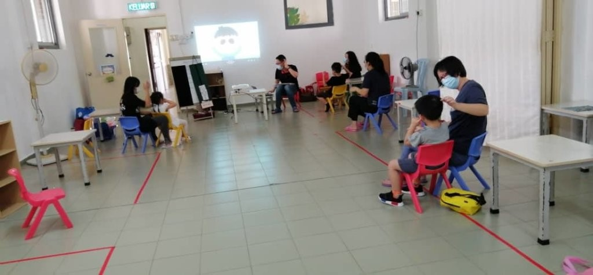
EIP group with social distancing
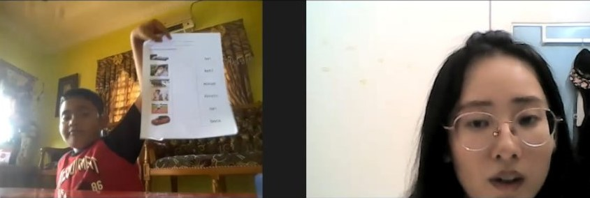
EIP virtual lesson
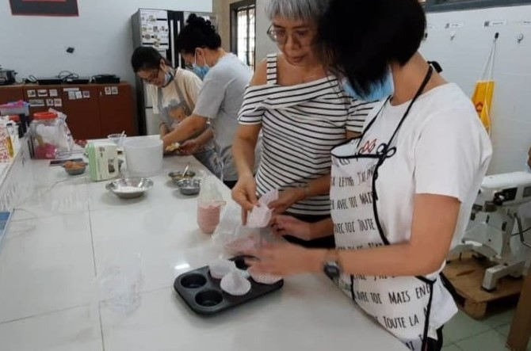
YAP physical cooking lessonYAP virtual lesson
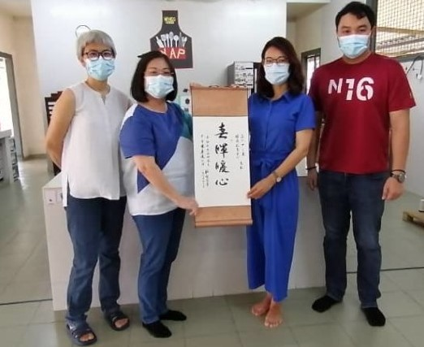
Exco members visitation
January – February 2021
A Fresh Start with Spring Cleaning
We were honoured to have the team from our Chairman Dato’ Chee Kong Chi’s legal firm, M/s Chee Siah Le Kee & Partners, kick off 2021 with a massive spring cleaning on 3 January 2021. Held in conjunction with the firm’s 40th anniversary, this CSR project was a joint, voluntary effort among the business partners, staff and Wings team to prepare for the school reopening on 11 January 2021.
With much joy we started physical lessons on 11 January 2021, but were ordered to close again on 13 January 2021 following a new Movement Control Order. The MCO was extended to 18 February 2021, and the centre remained closed until further notice.
Despite challenges such as sensory issues, conducive learning atmosphere, availability of teaching tools and IT devices, we progressed steadily through the cooperation, determination and diligence of all.
Chee Siah Le Kee & PartnersMen in actionOT room cleaningMr Chairman in actionStudentStudentStudentStudentStudentStudentYAP Zoom lesson
August – November 2020
Restoring Our Operations
Running our programmes during the COVID-19 season was challenging for everyone — management, teachers, students and parents alike. Through it all we continued to soar beneath the wings of God and sail through the difficult conditions, grateful for the spirit of "when the going gets tough, the tough get going" amid manpower, compliance and financial constraints.
Moving from the Conditional MCO to the Recovery MCO imposed until 31 December 2020 nationwide, we gradually restored operations toward a normal pace, while staying fully alert and compliant as several states experienced a third wave.
There were some dropouts due to personal reasons, but these were readily filled by new students as demand always outstrips supply in our field. Workshops and parent support group meetings were temporarily suspended.
EIP group lessonEIP teacher with studentSAP classroom lessonSAP gymSAP let's danceYAP — YY can cookYAP — I can aim too
July 2020
Bomba Sanitises the Centre
Bomba (the Fire & Rescue Department) came and sanitised our entire centre before we welcomed back all our students.
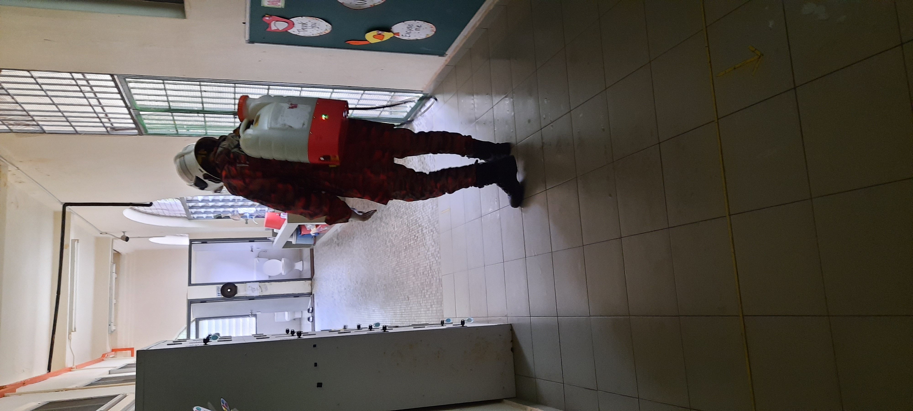
Sanitised the activity roomBomba crews
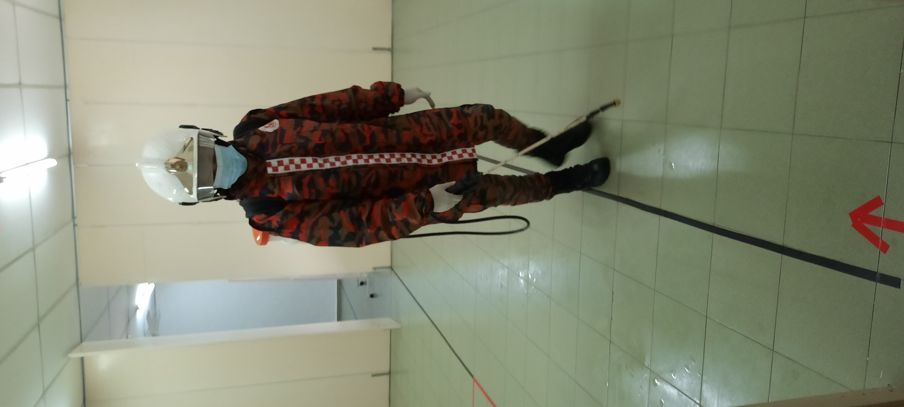
Sanitised the walkway
June 2020
Preparing to Reopen
After the Recovery Movement Control Order restrictions were lifted, staff resumed work from 10 June 2020 and carried out cleaning and sanitising in line with SOP requirements.
Schools and centres were still not permitted to open until further notice, so EIP and SAP students continued with virtual lessons and Google Classroom.
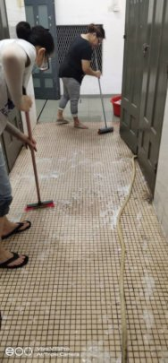
Centre cleaning
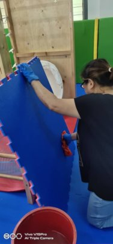
Sanitised the stimulation room
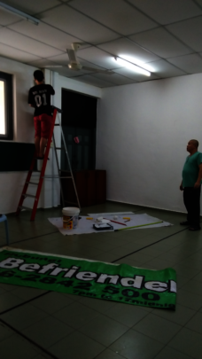
Paint activity room
March – June 2020
COVID-19 Lockdown
The whole nation was placed under lockdown and, thereafter, under the MCO and RMCO due to the COVID-19 pandemic. Our centre remained closed throughout that period, from 18 March 2020 to 9 June 2020.
During the lockdown, we conducted virtual lessons with our EIP students and Google Classroom with our SAP students.
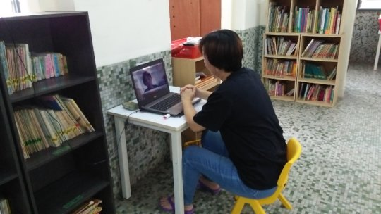
Online lesson during COVID lockdown
February 2020
Chinese New Year Lou Sang
The women’s bible study group, who have regularly supported the café work of our Young Adult Programme, initiated a Chinese New Year Lou Sang luncheon at our centre on 12 February 2020.
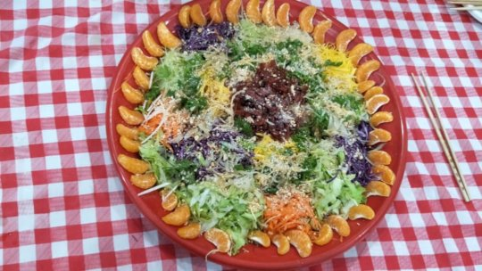
Fresh and colourful homemade lou sang
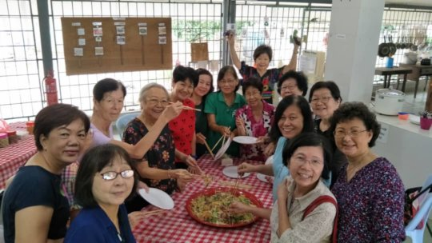
The ladies and their pretty organic lou sang
January 2020
OT Training by Ms Teo Lee Fun
Ms Teo Lee Fun, an Occupational Therapist trained in New Zealand, came to share with and train Wings’ teachers on sensory diet and ideas for stimulation activities for our students.
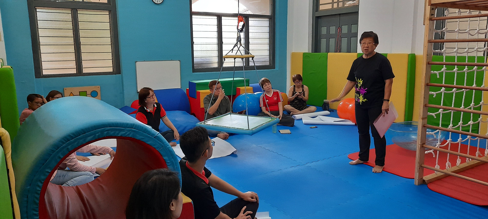
Ms Teo Lee Fun sharing with Wings staff and volunteers
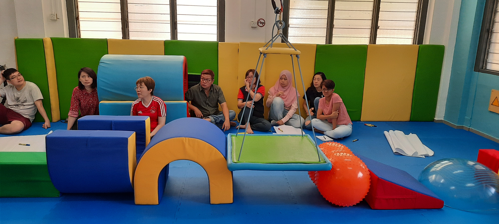
Wings staff and volunteers
Term Calendar
⚠️Placeholder — 2025 dates. These are carried over from the previous site and should be updated with the current academic year's dates.